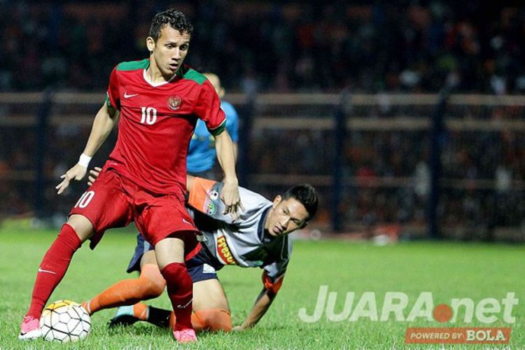

Egy Maulana Bakal Berkarier di Italia atau Spanyol
FERRIL DENNYS
KabarKabur.com - 27/09/2017, 14:46 WIB

Aksi pemain sayap Timnas U-19 Indonesia, Egy Maulana Vikri, saat tampil melawan Persibo Bojonegoro dalam laga uji coba di Stadion Letjen H Soedirman Bojonegoro, Jawa Timur (17/06/2017) Sabtu malam(SUCI RAHAYU/JUARA.NET)
KabarKabur.com - Keinginan Egy Maulana Vikri untuk berkarier di luar negeri bakal segera terwujud.
Hal tersebut diketahui setelah terjadi pertemuan antara Egy, Raden Isnanta (Deputi III Bidang Pembudayaan Olahraga Kemenpora), Indra Sjafri, dan Subagja Suihan (perwalikan Egy) di sebuah mall di Jakarta, Selasa (26/9/2017). Dalam pertemun tersebut, hadir juga agen asing.
"Perkembangannya sudah 80 persen dan sisanya tinggal tanda tangan kontrak. Kami bersepakat mengawal Egy untuk menjadi pesepak bola yang berguna untuk dirinya dan Indonesia," kata Subagja kepada kabarkabur.COM, Rabu (27/9/2017).
Subagja menjelaskan bahwa Egy diproyeksikan memperkuat salah satu klub di Italia atau Spanyol.
"Setelah dari Korea Selatan (Kualifikasi Piala Asia U-19), saya akan ke Eropa untuk melihat akademi atau klub tersebut," tutur Subagja.
Saat memperkuat salah klub di Eropa, Egy tidak lagi berstatus trial. Pemain yang menjadi pencetak gol terbanyak di Piala AFF U-18 2017 tersebut bakal diupayakan untuk berkarier di klub.
"Arahnya berkarier di klub. Saya tidak mau semacam trial," jelasnya.
Egy kemungkinan besar berkarier di Eropa pada tahun 2018.
Pemain asal Medan tersebut harus terlebih dulu menyelesaikan pendidikannya di PPLP (Pusat Pendidikan dan Latihan Olahraga) dan fokus timnas U-19.
"Dia harus dulu di timnas untuk meloloskan Indonesia ke Piala Dunia U-20," tuturnya.
penulis :FERRIL DENNYS
Editor :FERRIL DENNYS